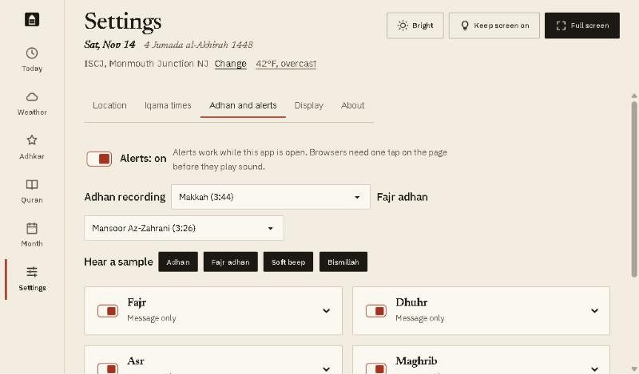
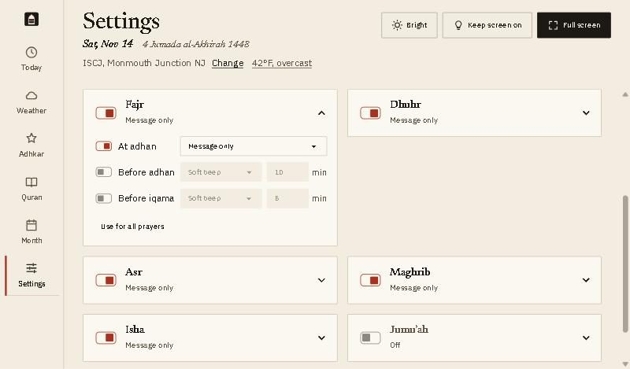

Chapter 5
Adhan and alerts
Iqama Times can call the adhan at each prayer, and remind you before the adhan and before the iqama. Each prayer has its own settings.
Before you start
- Alerts only work while Iqama Times is open on the screen.
- Tap the screen once after opening the app, so the browser lets it play sound.
- Out of the box, every prayer is set to Message only: a note appears, but nothing sounds. Follow the steps below to choose a sound.
Settings › Adhan and alerts


- Alerts: on turns every alert on or off at once.
- Adhan recording is the adhan used for Dhuhr, Asr, Maghrib and Isha. There are five: Makkah, Egyptian style, Masjid Al-Aqsa, Ottoman style and Mishary Al-Afasy.
- Fajr adhan has its own recording: Mansoor Az-Zahrani or Mishary Al-Afasy.
- Hear a sample plays the adhan, the Fajr adhan, the soft beep or the spoken Bismillah, so you can choose.
Each prayer’s alerts
Below the recordings is a card for each prayer. Tap a card to open it.


- The switch on the card turns all of that prayer’s alerts on or off.
- At adhan: what happens at the adhan time. Choose Message only, Soft beep, Bismillah, spoken, Adhan, your default recording, or any one recording.
- Before adhan: turn it on for a reminder before the adhan, and choose its sound.
- Minutes: how long before. Before iqama works the same way, counted back from the iqama time.
- Use for all prayers copies this card’s choices to the other four prayers.
Jumu’ah
The Jumu’ah card is off to start with. Turn it on for a reminder before the Friday khutbah. It uses ISCJ’s first khutbah, 12:00 PM, unless you type your own khutbah time.
When an alert sounds
- A large red Stop button appears. Tap it to silence the adhan. Your alert settings stay as they are.
- If Quran recitation is playing, it pauses for the alert and carries on afterwards.
- The line at the bottom of this page shows the last alert that went off, which helps check that alerts are working.
Good to know
- If you see Tap to enable sound, tap it. The alert then plays.
- A good start: At adhan set to Adhan, your default recording, and Before iqama set to Soft beep 5 minutes before.